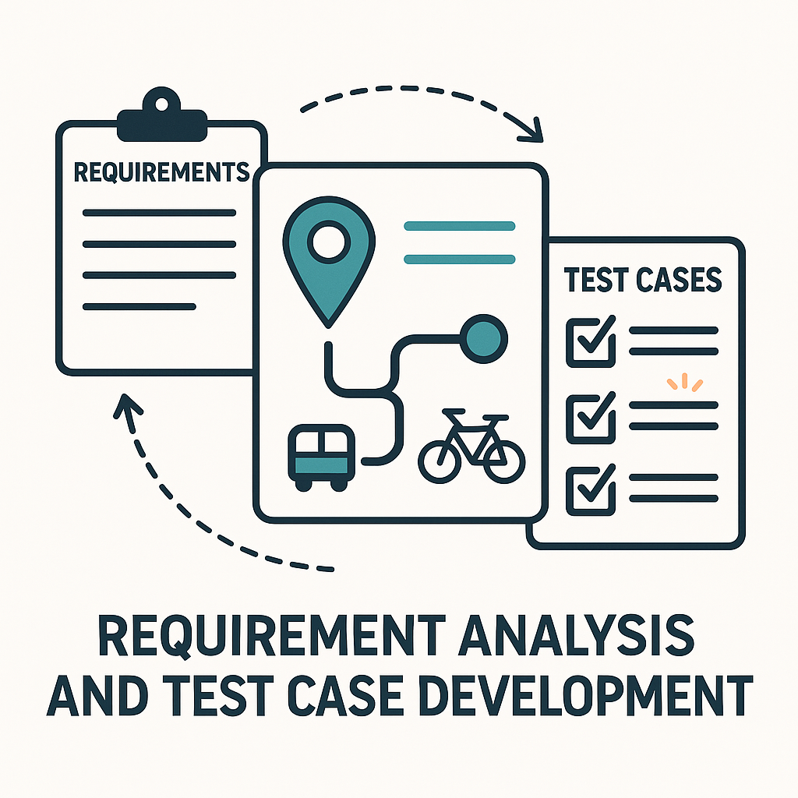
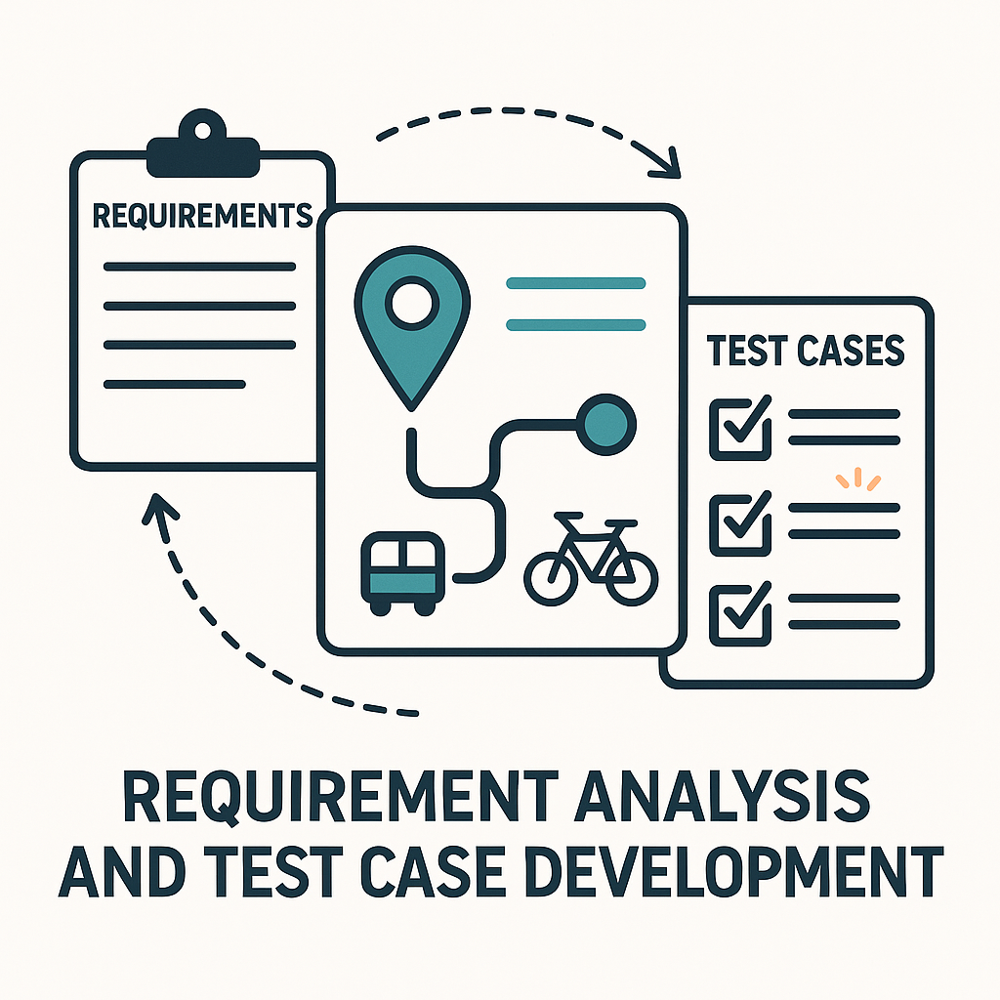

In this project, I prepared the groundwork for automating tests of the Urban Routes web app using Python and Selenium
This initial phase focused on setting up the project structure, organizing test data, and defining placeholder test functions to be implemented.
After all the initial work, I moved onto completing a fully automated end-to-end test suite for the Urban Routes taxi ordering app using Selenium
WebDriver in Python. The solution leveraged the Page Object Model design pattern to ensure maintainability and clarity.
 

In this project, I worked on the Urban Routes application, focusing on analyzing and validating user input fields for route planning. The core task involved thoroughly understanding functional requirements related to address input and transport mode selection, and then translating these into detailed test cases to ensure software quality and reliability.

This project involved comprehensive testing of two critical and evolving features within the Urban Routes application: the newly developed carsharing payments module and the unreleased Aero Taxi booking system. The task combined foundational QA practices learned in previous sprints with hands-on use of Chrome Developer Tools to execute and validate complex test scenarios.

In this project, I focused on designing, executing, and reporting API test cases for two key Urban Grocers backend features: Working with Kits and Working with Deliveries. Using detailed APi documentation (apiDoc and Swagger), I ensured thorough validation of functional requirements related to product kits management and delivery price calculations.

Donec eget ex magna. Interdum et malesuada fames ac ante ipsum primis in faucibus. Pellentesque venenatis dolor imperdiet dolor mattis sagittis magna etiam.

In this culminating project, I put all my QA skills to work, testing the web application, mobile application, and backend API featrues of the Urban Scooter application.